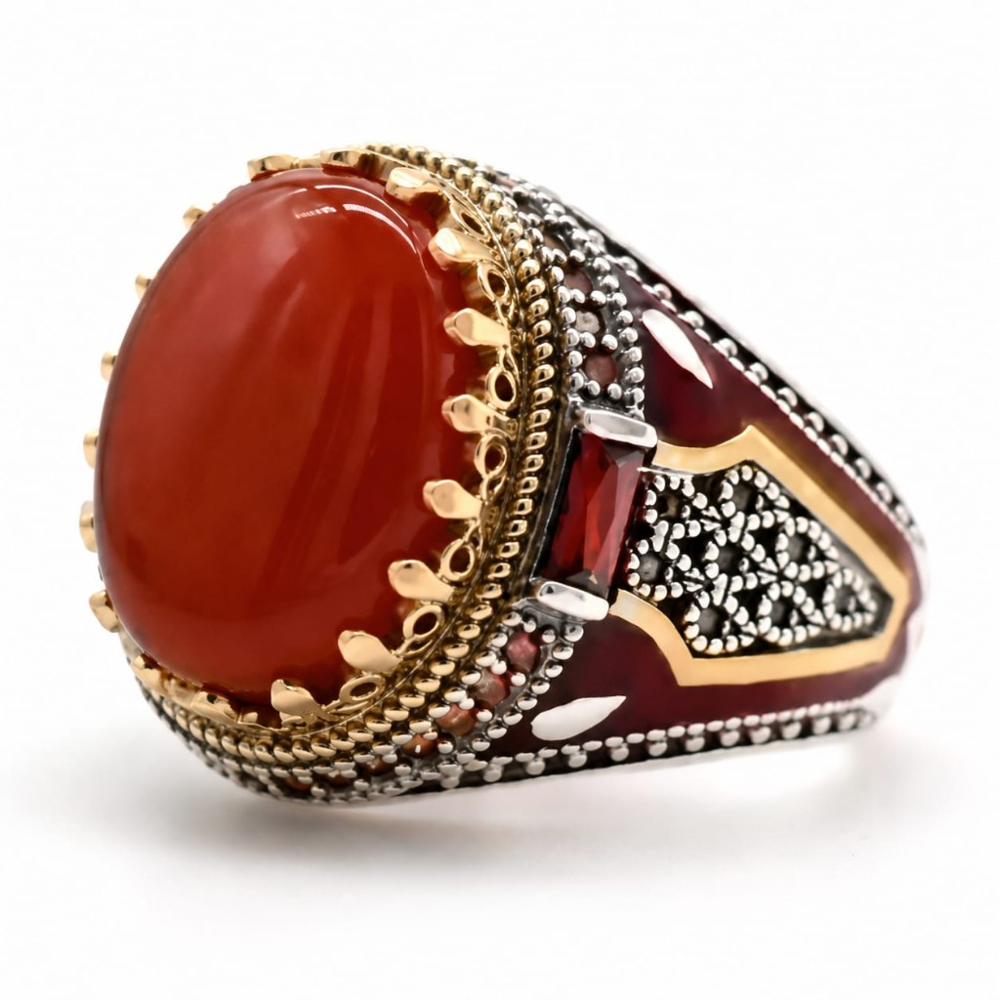
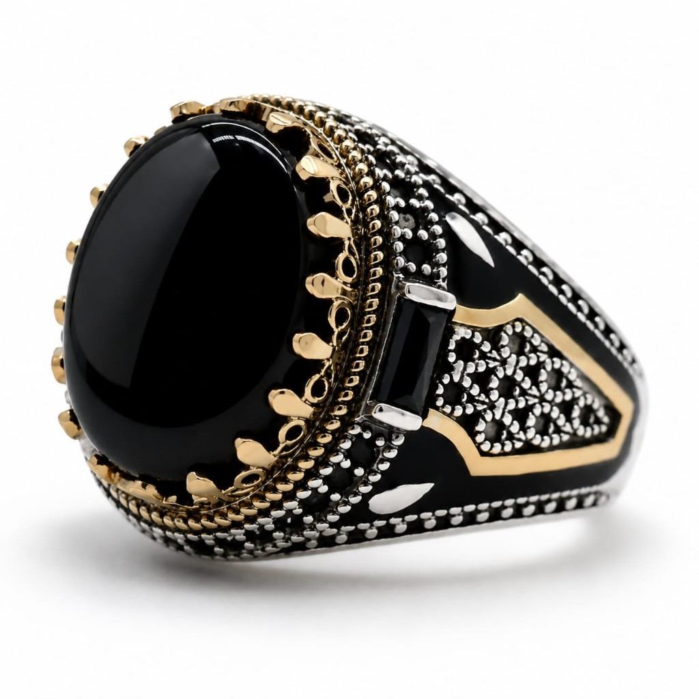

Kutana na mtabibu mwenye kubri
Issa Sultani — mtabibu wa nyota za binadamu na dawa za asili ya Africa. Ana uwezo wa kubaini tatizo lako pindi tu utakapofanya mawasiliano kupitia wasaa husika.
Anatibu kwa kutumia Vitabu vya Qur-an, dawa za asili za Africa, dawa za Kiarabu na majini.
Unasumbuliwa na mapenzi?
Umeachwa na umpendae — awe mume, mke — na bado unampenda? Umejaribu sehemu nyingi bila mafanikio? Wasiliana na Issa Sultani ujione muujiza wa papo kwa papo.
- Ana uwezo wa kurudisha mahusiano na kuimarisha ndoa yako ndani ya saa 12 tu.
- Umekimbiwa na mumeo, mkeo au mpenzi na anaishi na mtu mwingine? Muone akutatulie — ana uwezo wa hali ya juu wa kusambaratisha mahusiano yao endapo utafuata atakachokuelekeza.
- Atamfanya atimize ahadi zote kwa muda mfupi.
- Issa Sultani anatumia jina la muhusika au picha kumaliza tatizo lako.
Kinga, zindiko na nguvu
Pete na dawa za asili zinazotumika katika tiba ya kiroho, kinga ya mwili, na kulinda maisha yako.


Huduma za tiba
Anatafsiri ndoto. Kushinda bahati nasibu. Kusafisha nyota. Mvuto wa mwili na biashara — na mengi zaidi.
- Tafsiri ya ndoto Anatafsiri ndoto zako na maana zake
- Kushinda bahati nasibu Kufungua milango ya bahati na mafanikio
- Kusafisha nyota Usafishaji wa nyota za binadamu
- Mvuto wa mwili na biashara Kuongeza mvuto na mafanikio katika biashara
- Kinga ya mwili Ulinzi wa kiroho wa mwili wako
- Zindiko za nyumba Kulinda na kutakasa makazi yako
- Miguu kufa ganzi Tiba ya matatizo ya miguu
- Kufungua kizazi Kwa waliofungwa kwa njia za kishirikina
- Jini la mali Kwa anayehitaji utajiri — bila masharti
- Nguvu za kiume Kuimarisha nguvu na uwezo wa kiume
- Kesi zilizoshindikana Humaliza kesi ndani ya siku 14 tu
Wasiliana sasa
Fanya mawasiliano kupitia wasaa husika — utasaidiwa haraka.
NB: Tiba kwa dini zote na imani zote.